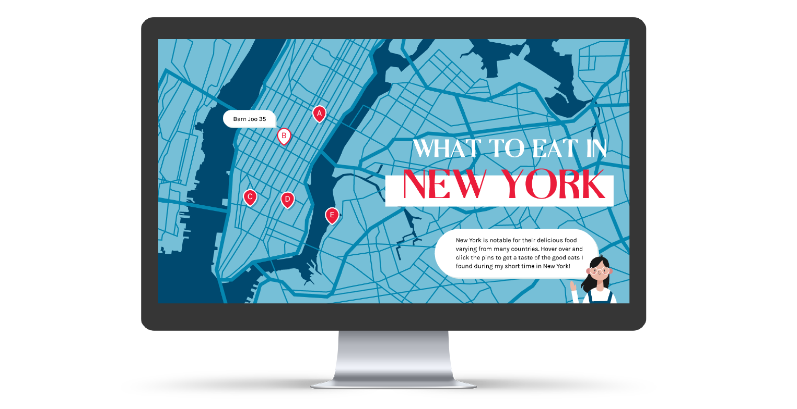

WEB DESIGN / GRAPHIC ILLUSTRATION
An interactive site that gives a taste of some of the good eats in New York.
During the month of November, I went on a short New York trip and discovered some of the delicious and tantalizing eats that New York had to offer. In aims to demonstrate my web design skills and show others some of the good eats I found in New York, I decided to create an interactive site that gives a taste of some of the scrumptious foods in New York.
Role
Graphic IllustratorWeb Designer
Team
IndividualTools
Adobe IllustratorHTML, CSS, JavaScript
Timeline
3 days, Jan 2020

BACKGROUND
During my academic career at the University of California, Berkeley, I was grateful to be enrolled into the Web Design DeCal, instructed by Innovative Design. Throughout the course, we learned various web development techniques, from HTML & CSS to JavaScript & jQuery, as well as design theories like spacing, positioning, and web color theory - all needed to create one's own personal website! Before taking this class, my knowledge and skills of design were only reached to traditional and digital mediums (pencil and Illustrator), but through taking this class, I was able to implement my creativity and expand my skills into a new source of design medium - code!
OBJECTIVE
Create a fully functional website (on the front-end) applying the skills and theories learned from the course. The site must have views and 3 features.
IDEATION
For the design and ‘aesthetic’ of the site, I aimed to go for a ‘Google Maps’ interface look. This look was incorporated by the colors (blue, red, and grey), drop pins, and hovering over the pins.

Screenshot of New York map in Google Maps.

Screenshot of the landing page on the site's first iteration.
To further specify the location (either than the address located under the title), I added a pulse animation once the specific pin was clicked on. The animation would zoom in to the specific locations on the map.
Animated the back button to bounce back and forth. This animated back button would visually notify users that - once clicked on - they would be directed back to the main page.
To differentiate the pins from one another as well as to reduce compacted space if all the hovers were present, I put a speech bubble (with the title of the restaurant/location) once a user hovered other the specific pin.
INTERACTION
REDESIGN
Unsatisfied with the current site, I decided to take another go at the site, implementing more animations and other features.
STYLE GUIDE


FINAL DESIGN


INTERACTION